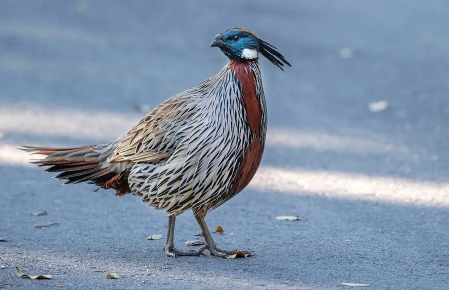

鸟类 · 动物界
勺鸡 Pucrasia macrolopha

中等体型的山地雉类，雄鸟头侧有白色斑块、枕部生细长冠羽，胸羽呈鳞片状。清晨在灌丛中发出响亮的“科—科”声，性隐秘。
- 分类
- 门脊索动物门纲鸟纲目鸡形目科雉科属勺鸡属
- 栖息环境
- 海拔 1000–3500 米的山地针阔混交林、栎林、杜鹃灌丛、竹林与林缘岩石坡。
- 地理分布
- 喜马拉雅山脉至中国中部、东部山地，包括西藏、云南、四川、陕西、湖北、安徽等省区。
- 保护级别
- IUCN 红色名录列为无危（LC）；中国国家二级保护野生动物，列入 CITES 附录二。
物种志
勺鸡体长约五十三至六十八厘米，体重七百至一千四百克。雄鸟头部黑褐色，颈侧有一大块白色斑，枕部延伸出细长的冠羽；上体灰褐，密布黑色纵纹和浅色羽缘，胸腹部栗褐色，羽毛边缘色浅，形成鳞片状斑纹。雌鸟通体棕褐，密布虫蠹斑，无白色颈斑，体型略小。虹膜褐色，嘴黑，脚灰褐至暗红色，雄鸟具短距。
它栖息于海拔一千至三千五百米的山地针阔混交林、栎林、杜鹃灌丛与竹林，性隐蔽，多成对或结小群在林下活动，取食植物嫩叶、种子、浆果与昆虫。繁殖期在地面灌丛下或岩石旁营巢，每窝产卵四至六枚。鸣声为响亮而有节奏的“科—科—科”，清晨和黄昏最为频繁。勺鸡分布于喜马拉雅山脉至中国中部和东部山地，中国见于西藏、云南、四川、陕西、湖北、安徽等地，被列为国家二级保护动物。
形态与习性
- 体长53–68 厘米
- 体重700–1400 克
- 食性嫩叶、种子、浆果与昆虫
- 繁殖地面营巢，每窝 4–6 枚
- 鸣声响亮而有节奏的“科—科—科”
- 保护级别国家二级；IUCN 无危
趣味知识
- 雄鸟颈侧有一块醒目的白色斑，是最快的识别特征。
- 枕部的细长冠羽像一缕向后飘的柳叶。
- 受惊时多在地面奔跑躲藏，迫不得已才起飞。